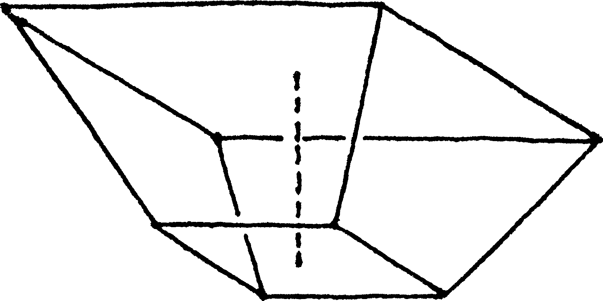
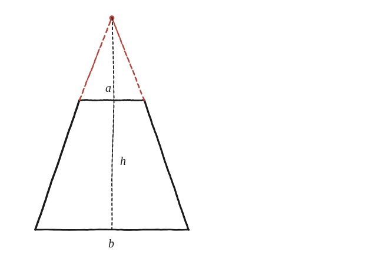

Un quadrat de costat a se situa a una altura h damunt d'un quadrat de costat b, formant una piràmide incompleta. Com depèn el seu volum de a, b i h?

Què hem de produir
Una fórmula en a, b, h. "Incompleta" és la pista: el sòlid és un tros d'una piràmide, no una piràmide sencera.
Completa el que falta
Es prolonguen els quatre costats inclinats del tronc fins que es tornin a trobar en un sol punt. Aquest punt existeix sempre —perquè els dos quadrats són paral·lels i concèntrics, un d'escala diferent—: és el vèrtex de la piràmide sencera de la qual el sòlid original n'és només un tros.
La construcció

Tancar-ho
El sòlid original és (piràmide gran, fins al vèrtex, base b) menys (piràmide petita, el tros de dalt afegit imaginàriament, base a). Per semblança de triangles, l'alçada H de la piràmide gran compleix a/b = (H−h)/H, d'on s'aïlla H en termes de a, b, h. El volum del tronc és (1/3)b²H − (1/3)a²(H−h).
El volum del tronc és la diferència entre el volum de la piràmide gran completada (base b, fins al vèrtex) i el de la piràmide petita afegida imaginàriament (base a), totes dues calculades amb l'alçada que dona la semblança de triangles.
Comprovació
a=2, b=4, h=3: alçada de la piràmide gran H tal que a/b=(H−h)/H → H=6. Volum gran=(1/3)(16)(6)=32. Volum petit=(1/3)(4)(3)=4. Volum del tronc=32−4=28.
Aquesta mateixa jugada —completar una figura incompleta fins a una de coneguda, i restar-ne el tros de més— torna a aparèixer en aproximar un casquet esfèric, i, en un altre embolcall, en aproximar un con per discs apilats.